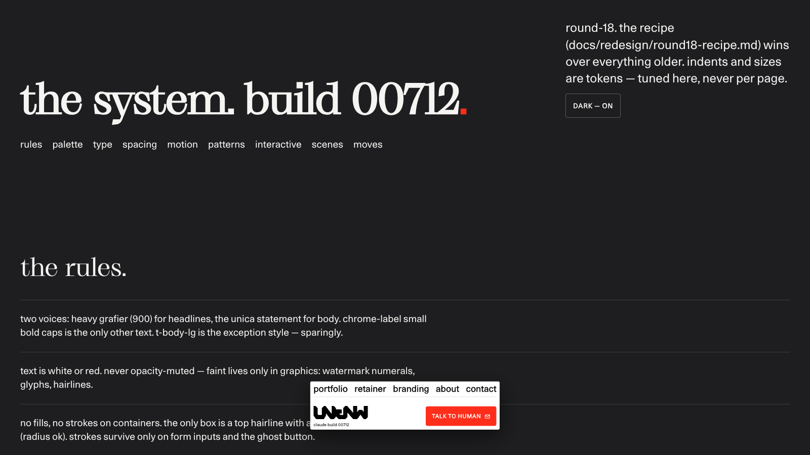
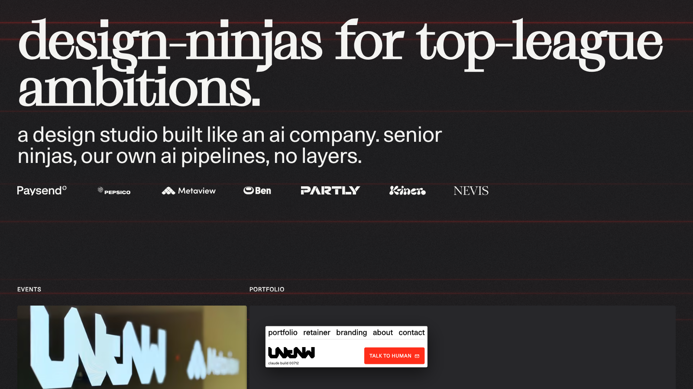
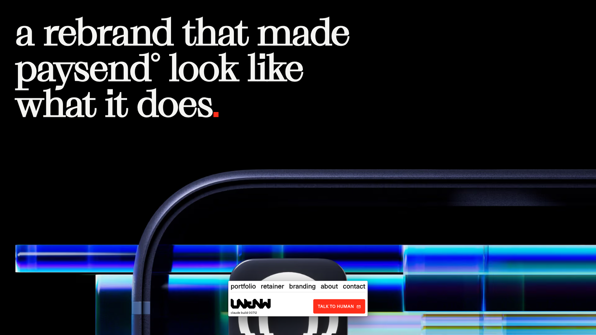

×
Webflow, Wix & Framer
→ custom React
with Claude Code.
Mike Rosenblatt · founding design director, unknw
nova talents · 29.09.2026
Mike Rosenblatt · founding design director, unknw
nova talents · 29.09.2026
Custom code was slower than the builder.before
Custom code is faster than the builder.now
You needed an engineer to change a margin.before
You describe the margin. The engineer is a terminal.now
Design system lived in Figma, code drifted.before
Design system lives in code. Figma is a view.now
--bg: #1e1e20; --bg-raised: #27272a;
--ink: #f4f4f2; --ink-muted: rgba(244,244,242,.64);
--red: #ff2e1a; --hairline: rgba(244,244,242,.14);
--font-display: var(--font-grafier);
--font-body: var(--font-unica);
--text-display: clamp(52px, 9.2vw, 164px);
--text-h1: clamp(40px, 6.4vw, 112px);
--text-h2: clamp(30px, 4vw, 64px);
--pad-x, --pad-y, --gap-section, --gap-cols
--radius, --shadow-card, --ease-out, --dur
--ink-muted, never --grey-64./ds — palette, type, spacing, motion, patterns. Claude reads it before building anything.
Design system first — tokens, never hardcoded values. Colour via --bg, --ink, --red… Never a raw hex in a component; a new hex means you skipped the token.
Re-use elements before building new ones. Look in components/ui/, components/fx/ first. Two components doing the same job is a bug.
Every state change animates. Nothing ever jumps statically.
Feed content lives in JSON. Never hardcode content in components.
Bump the build number on every ship.
Order matters: tokens → ui → fx → layout → primitives → pages. Never the other way. If Claude starts a page before Nav exists, stop it.
Make the about page.
→ generic layout, invented copy, its own colours.
Build a modern, minimal, elegant about page with smooth animations and a premium feel that reflects our brand values.
→ the same generic page, now with a gradient.
Build /about from shots/about-desktop.png and shots/about-mobile.png. Content is in data/about.json. Use Section, Reveal, Btn. Headline is .t-h1, body .t-body. Team grid: 3 columns desktop, 1 mobile, gap --gap-cols. Match the screenshot's spacing within 8px. Open it in the browser at 1440 and 390 and compare to the shots before reporting.


Client edits daily and refuses git.stay
Five pages, lives for one campaign.stay
Nobody on the team will open a terminal.stay
You want what the panel doesn't have.move
You have a design system. Make it real.move
Third year paying per seat, per site.move
globals.css, one /ds page, one rule: never a raw value.mike@unknw.com · unknw.com/ds · the deck: unknw.com/events/nova